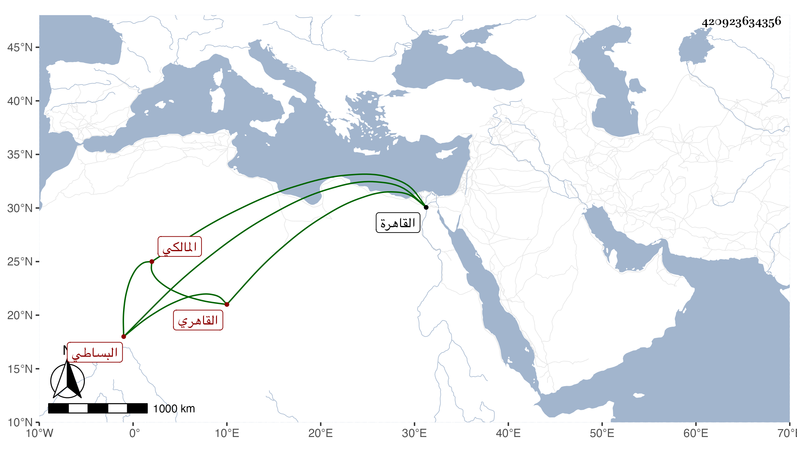

0902Sakhawi.DawLamic.ITO20230111-ara1.EIS1600.420923634356
Biography ID: 420923634356
107
محمد بن عبد الغني بن محمد بن أحمد بن عثمان بن نعيم بدر الدين البساطي الأصل القاهري المالكي الماضي أبوه وجده ويلقب دبيس . ولد في ربيع الأول سنة ست وثلاثين وثمانمائة بالقاهرة ، وأجاز له البرهان الحلبي وغيره وحفظ بعض الكتب وتكسب بالشهادة وليس بمحمود السيرة . مات في ليلة الأحد ثاني عشري ربيع الأول سنة اثنتين وتسعين .
